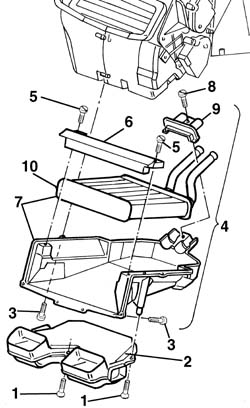
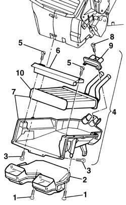

5040C52 air conditioner heater radiator - r+r with fan unit disconnected
- Path
- Procedures > 50 AUXILIARY UNITS > 5040 AIR CONDITIONING CASING AND COMPONENTS > 5040C air conditioner box and components > 5040C52 air conditioner heater radiator - r+r with fan unit disconnected
- Kind
- repair procedure (removal / refitting; the operation number is the code)
- Applies to
- all engines; all production periods
- Interactive page
- https://sloeber94.github.io/elrnDB-a156/en/#/3238338
Applies to: all engines; all production periods; only with equipment: Air Conditioner
 Removing
Removing
 Refitting
Refitting1. Unscrew the screws.
2. Remove the conveyor.
3. Unscrew the radiator support.
4. Lower the support with radiator.
5. Unscrew.
6. Remove the sleeper.
7. Remove radiator and support.
8. Unscrew.
9. Remove the stop.
10. Remove the radiator from its support.

Applies to: all engines; all production periods; only with equipment: Air Conditioner
Refitting
RemovingCheck that the radiator is intact, without drippings, damages or dirt on its finned surface.
Insert the radiator in its support.
Reassemble the stop and fasten it with the screw.
Insert radiator and support under the dashboard.
Reassemble the sleeper and fasten it with the screws.
Position support and radiator.
Screw the radiator support.
Reassemble the conveyor and fasten it with screws.
Applies to: all engines; all production periods; only with equipment: Right hand drive and Air Conditioner
Removing
Refitting1. Undo the bolts.
2. Remove the duct
3. Unscrew the radiator mount bolts
4. Lower the mount and radiator.
5. Undo the bolts.
6. Remove the crossmember
7. Remove the mount and radiator.
8. Undo the bolt.
9. Remove the retainer.
10. Remove the radiator from the mount.

Applies to: all engines; all production periods; only with equipment: Right hand drive and Air Conditioner
Refitting
RemovingCheck that the radiator is intact, that there are no leaks and that there is no damage or deposits of dirt on the finned surface.
Fit the radiator in the mount
Refit the retainer and bolt in place.
Fit the mount and radiator beneath the facia.
Refit the crossmember and bolt in place.
Fit the mount and radiator in its seat.
Tighten the radiator mount bolts.
Fit the shroud and fix it using the bolts.